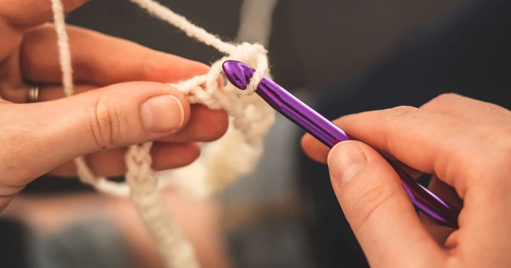
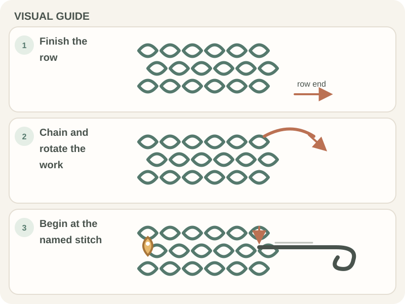

Crochet Basics · Beginner guide
How to Turn Your Work at the End of a Crochet Row
Turn a row of crochet without twisting the fabric or losing track of the edge stitches.

Turning changes the direction you work across a flat piece. The turning chain’s height and whether it counts as a stitch depend on the pattern.
Before you begin
Finish the row and check the pattern’s turning-chain count. Keep the hook loop secure as you rotate the work.
Step-by-step instructions
- After the final stitch, stop before pulling the hook loop larger.
- Rotate the piece so the working edge is positioned for the next row; do not rotate the hook through the fabric.
- Make the turning chain specified by the pattern. A US single-crochet row may use one chain, but this is not universal.
- Work into the first stitch or skip it only as directed, then check the row count.

What to check
Keep the row edge in view
The fabric should lie flat rather than twist. If the edge gains or loses stitches, check whether the turning chain counts and locate the first stitch before continuing.
Frequently asked questions
Which direction should I turn?
Use the same turning direction throughout the piece. Rotate the work rather than flipping the hook through a stitch.
Do I always chain one to turn?
No. The turning-chain height depends on the next stitch and pattern instructions.